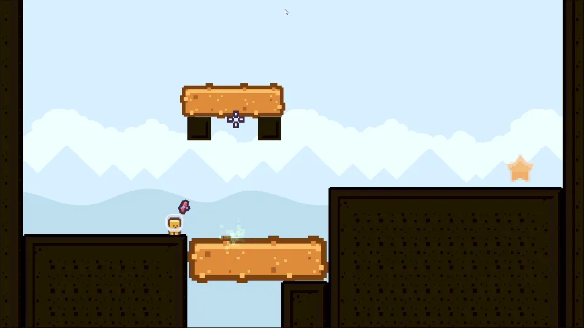
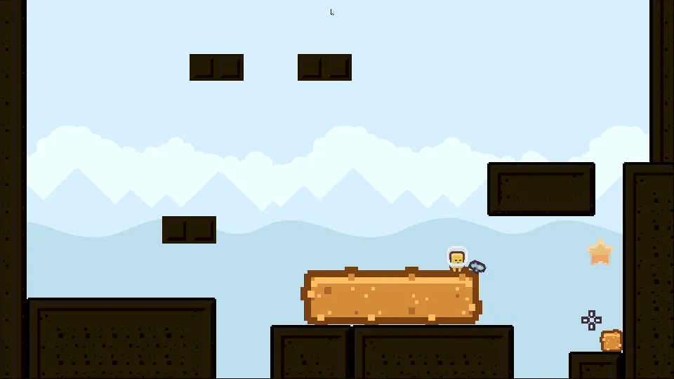
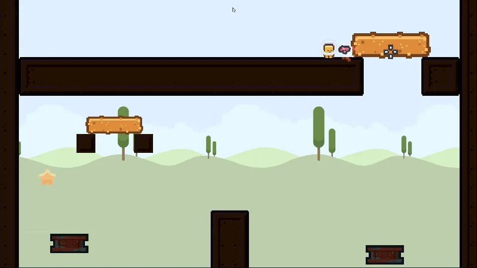
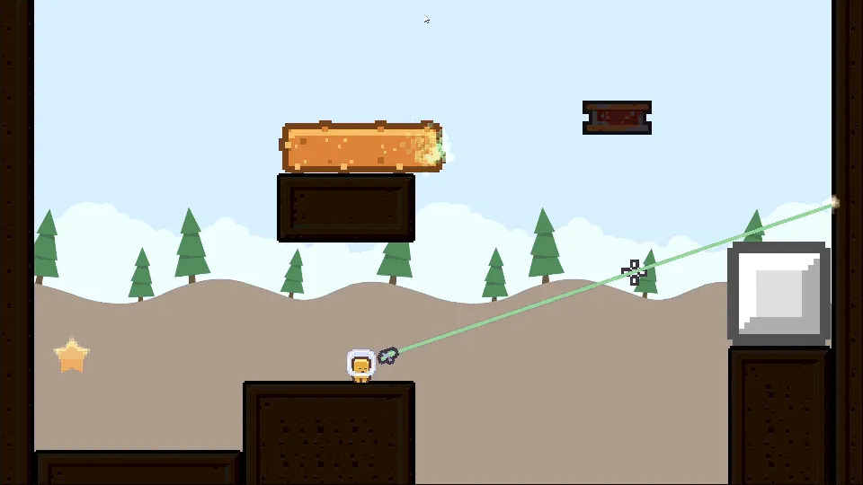

Moment to moment
Aim, hold click, watch the block grow or shrink, and let go at the right size. The beam's colour and hit particles show at once whether the target can be scaled.
You can't jump. Shrink and enlarge the world to build your own path to the goal.
Size Matters is a 2D puzzle-platformer with no jump button. The player can only walk left and right, and carries two laser guns: a Shrink Ray and an Enlarge Ray. Grow blocks into staircases, shrink obstacles out of the way, bounce beams off mirrors to reach blocks out of sight, and ride moving platforms across nine hand-built levels.
I made it solo for Kenney Jam 2026, whose theme was SCALE, so scale became the core mechanic. I did the design, programming and level design.
The game takes a short time to load, especially the first time you play.
⏸ The game is paused. Click on the game screen to resume.
Read, resize, walk. The player changes the size of objects to build a path, then tests it on foot. With no jump button, resizing is the only way to change your route.
Find the gaps between you and the goal
Scroll to switch between Shrink and Enlarge
Hold click and let go at the right size
Walk it, or ride the platforms, to the goal
Aim, hold click, watch the block grow or shrink, and let go at the right size. The beam's colour and hit particles show at once whether the target can be scaled.
Spot the gap between you and the goal, work out which blocks to resize and in what order, then walk or ride the route. Press R to restart and try another order.
Each act adds a mechanic (scaling, then moving platforms, then mirrors), and later levels combine them. Tighter scale caps keep old tricks from solving new puzzles.
Every action can be undone (shrink what you grew), so experimenting is safe. A failed attempt costs seconds, not minutes: falling or getting stuck sends you straight back to aiming, which keeps players in the loop instead of punishing them.
The whole game comes from two lasers and a world that reacts to size.
Hold left click to fire. Objects scale smoothly while the beam stays on them, so the player decides the exact size by when they let go. Shrinking clears obstacles out of the way or turns a block into a step that fits a gap.

Scroll the mouse wheel to switch to the Enlarge Ray. Growing a block is how the player gains height: a small block becomes a staircase or a bridge. A block pressed against a wall or the floor grows away from it instead of clipping through, and stops growing if it is boxed in on both sides.

Platforms reverse when they hit an obstacle and carry the player and any objects resting on them.

The laser bounces off mirrors up to three times, which allows bank-shot puzzles: the player can resize a block they can't see or reach directly. Mirrors can't be resized themselves, so they are fixed points to plan around.

Some surfaces can't be scaled, shown by a different hit effect, so the player learns which objects are tools.
All vertical movement comes from resizing the environment, so every level is a question about the world, not about reflexes.
| Input | Action |
|---|---|
| A / D or Left / Right arrows | Move |
| Mouse | Aim |
| Left click (hold) | Fire the laser |
| Scroll wheel | Switch between Shrink and Enlarge |
| R | Restart the level |
| Esc | Main menu |
Each level adds one new idea, and the number of interactive objects grows from 2 in Level 1 to 21 in Level 9. Since there's no jump button, every level asks one question: how do I change the world so I can walk to the goal?
| Act | Levels | Backdrop | Focus |
|---|---|---|---|
| I: Learn to Scale | 1 – 3 | Pyramids | Only scalable blocks: learn to grow and shrink |
| II: Things in Motion | 4 – 6 | Tall trees | Adds moving platforms and timing |
| III: Bend the Beam | 7 – 9 | Forest | Adds reflective surfaces and indirect aiming |
| Level | Blocks | Platforms | Mirrors | What's new |
|---|---|---|---|---|
| 1 (Tutorial) | 2 | 0 | 0 | Controls shown on screen. Grow a block to cross a gap. |
| 2 | 3 | 0 | 0 | More blocks, so the order you scale them in matters. |
| 3 | 2 | 0 | 0 | A block sits right under the goal, so you resize near it. |
| 4 | 3 | 2 | 0 | Moving platforms appear. The goal is on the left, so you play in reverse. |
| 5 | 2 | 2 | 0 | Platforms moving in opposite directions: timing. |
| 6 | 3 | 3 | 0 | The goal is raised high up. Platforms move at different speeds. |
| 7 | 3 | 3 | 1 | A reflective surface appears. You start mid-level and the goal is behind you. |
| 8 | 6 | 6 | 1 | A vertical platform appears. The busiest level yet, with layered routes. |
| 9 (Finale) | 6 | 6 | 9 | Several mirrors. Every mechanic at once, including a mirror on a platform's route. |
Each block has its own minimum and maximum size. Most can grow 4–5×, but some in Levels 7–9 stop at about 2.15×. That removes “just make it huge” solutions without adding any new mechanic.
Blocks start at sizes from 0.6× to 3.5×. A tiny block hints “grow me” and an oversized one hints “shrink me”, so the player gets guidance without any text.
Blocks have very high mass, so the player can't push them around: changing a block's size is the only way to use it. Mirrors have extra-heavy gravity so they settle at once and stay put.
Platforms run at speeds of 1.5–3, start in different directions, and move sideways or (later) up and down. That changes a level's timing without new code.
Blocks, mirrors and platforms all carry whatever rests on top of them, so mechanics stack instead of just sitting next to each other.
A kill zone along the bottom of every level restarts it with a screen fade. R restarts at any time, so trying ideas is cheap.
Kenney Jam 2026, hosted by Kenney and Kay Lousberg on itch.io, ran from July 17 to 19, 2026 (about 50 hours) and received 568 entries. The theme was announced at the start: SCALE.
| Jam requirement | How Size Matters answers it |
|---|---|
| Incorporate the theme: SCALE | Scale is the only verb. Changing the size of objects with two lasers is how the player moves, solves and progresses; there is no jump to fall back on. |
| Use only Kenney or KayKit assets | All the art comes from Kenney asset packs: pixel tilemaps, characters and backgrounds. |
| No generative AI | No AI was used for code, art or audio. |
| About 50 hours | Two tools and three supporting mechanics, reused across nine levels. Tuning numbers (scale caps, starting sizes, platform speeds) created new puzzles without new code. |
Without a jump, every bit of vertical movement had to come from the player's own actions, so the levels are built around what the player can change, not around platforming skill. Per-object scale caps turned out to be my strongest design tool: one number could remove a whole class of unintended solutions.